二次流在此孤立出现：无曲率、无端壁，只有科氏力驱动展向平均流 W̄(y)，与湍流相互作用组织出流向拉长的反向涡对。
每个工况提供 U⁺(y)、W⁺(y) 与完整 ⟨uᵢuⱼ⟩⁺(y) 剖面，129 个法向节点 —— 两级 AI 阶段共用同一数据源。
Roτ=150 时流向域需急剧延长，系统 DNS 成本随旋转数快速膨胀；5 工况系统性扫描代价高。
船舶/叶轮机械的动量与热输运受二次流控制，需要桌面 CPU 分钟级的定量重建，而非每次完整 DNS。
discover–close–simulate 三段式：发现紧凑闭合 → 积分平均剖面 → PINN 重建 TG 涡场，误差传播全程可测。
六个独立各向异性分量中，次流协方差 b₂₃ = ⟨vw⟩/2k 是唯一决定性分量：
· 通量闭合 mode-1 平衡 → 锁定 W̄(y)（对 DNS 验证精度 0.4% rms）
· 通过 W̄ 及其壁梯度进入 mode-2 的平流与基涡量
冠军公式族的三大原料在后续三代方法中反复出现：
壁面函数 yw=1−|y|/h 的幂/对数 · 旋转饱和 √Ro_loc、tanh(c·Ro_loc) · 不变量分母 1/(c+η²)
直接输出人类可读的显式公式，天然可解释、可移植、可塞进 RANS 求解器；不训练即可外推评估。
① 无物理先验 —— 搜索空间里有大量违反对称性/量纲的形状
② 常数病态 —— 逐通道独立估常数，中间口径误差的 84–92% 来自通道间抵消
③ 幸运种子 —— PySR m 变体三种子极差 7.8×，最好成绩不可复现
经典 SR 用表达式树（左图）：每个子表达式只出现一次，公共子结构无法共享，交叉/变异只能盲目换子树。LGF 把候选升级为有向无环图 DAG：不同分支可复用同一节点（如 √Ro_loc 只算一次、处处引用），"节点=算子/变量、边=参数与特征" 使拓扑与常数在同一表示下被联合进化；AI-Feynman 先验也直接变成图上的剪枝约束。树是图的特例——这一升级让 GP 的每一次交叉都在"复用已验证的子结构"，而非重新拼装。
| 模型（终口径） | 常数 | NMSE | 备注 |
|---|---|---|---|
| LGF-e（引导） | 21 | 0.058 | 冠军 |
| PySR 最好（g 池） | 19 | 0.128 | ≈ 2.2× 差 |
| LGF-m（引导） | 55 | 0.072 | 全张量池 |
| PySR 同复杂度封顶 | 12/函数 | 0.357→1.007 | 严重退化 |
· b₂₃ 是偏置主导信号（均值/标准差 1.6–2.9）：形状相关 ρ>0.95 很容易，NMSE 跨两个数量级
· 复杂度封顶后 PySR 从 0.357 退化到 1.007 —— 没有先验的搜索，预算越紧越失控
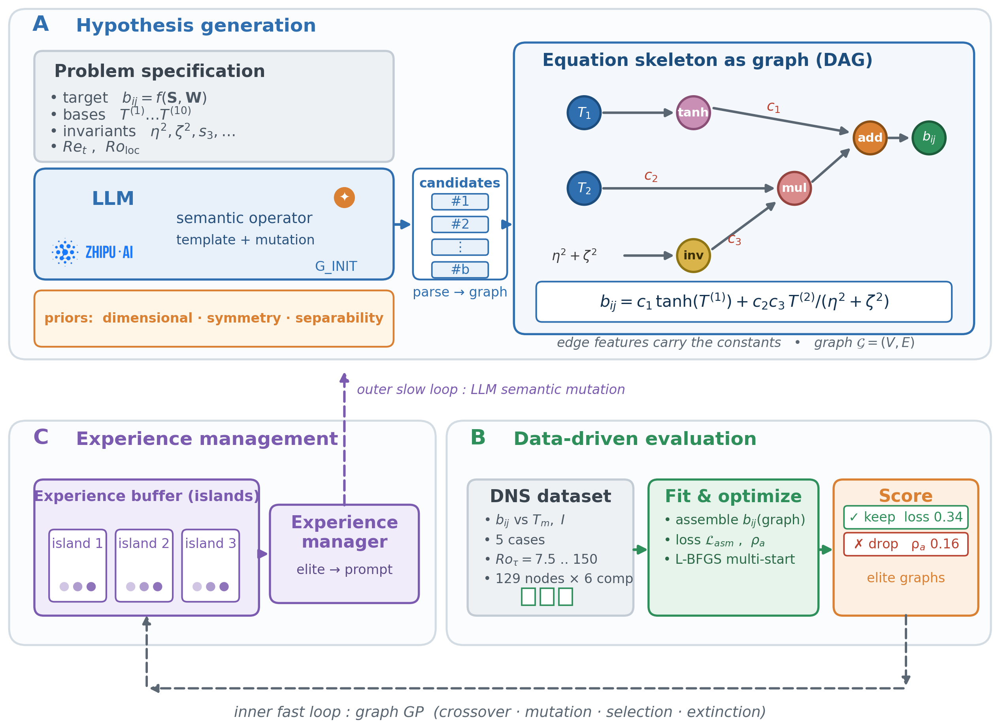
G_INIT 种子公式 / M_GUIDE 变异建议 —— 把"半个湍流文献"的直觉变成定向变异（"给增长项加 tanh 饱和"）。
候选 = 边特征 DAG（节点=算子/变量，边=常数与特征）：子结构复用、拓扑+常数联合进化、L-BFGS 多起点拟合、误差归因定位病灶子图反馈 LLM。
AI-Feynman 物理先验（量纲/对称/可分性）转成图约束剪枝；同复杂度封顶时 PySR 退化而 LGF 稳定。
预训练语料里"住着"半个湍流文献：对数律、tanh 饱和、SSG/EDQNM 代数闭合……LLM 提议的骨架天然落在物理上合理的函数族内。
看到误差归因（哪个子图贡献了误差），LLM 做语义级手术："给增长项加 tanh 饱和"，而非 GP 的盲目子树交换。
同复杂度封顶时 PySR 崩坏（0.357→1.007）而 LGF 稳定 —— 先验把搜索约束在低损失盆地，等效于正则化。
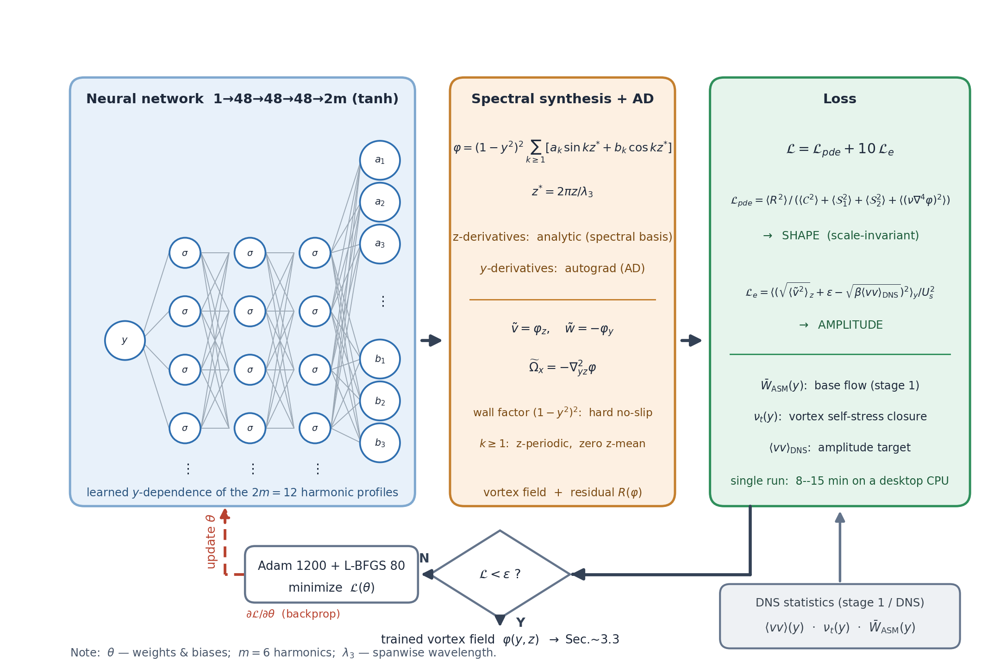
φ=(1−y²)²·Σ[a_k sin+b_k cos]kz*：展向周期、无滑移、不可压恒满足——约束进结构，损失只需管物理。
L_pde 尺度不变归一（定涡形）+ L_e RMS 能量标定（定幅值，防 a=0 梯度消失）；y 导数嵌套 autograd，z 导数解析。
tanh/宽 48/3 层 · Adam 1200 + L-BFGS 80 · 桌面 CPU 分钟级；9 runs 振幅误差 1.7–11%，对 O(1) 剖面误差稳健。
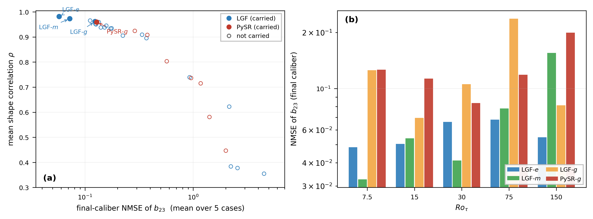
横轴 ρ 只量"形状对不对"，纵轴 NMSE 才量"幅值准不准"。b₂₃ 是偏置主导信号：所有方法 ρ>0.95 挤在右边界，但 NMSE 跨两个数量级 —— 形状容易、幅值难。
四冠军（箭头标注）全部落在低 NMSE / 中低复杂度角；等复杂度封顶后 PySR 聚集在高 NMSE 区，LGF 不受影响 —— 先验=隐式正则化的直接视觉证据。
每点都经过"SR 中间口径 → LM 联合 refit 终口径"双校准；终口径治愈了 SR 逐通道常数的病态（m 池 34 → 0.072）。
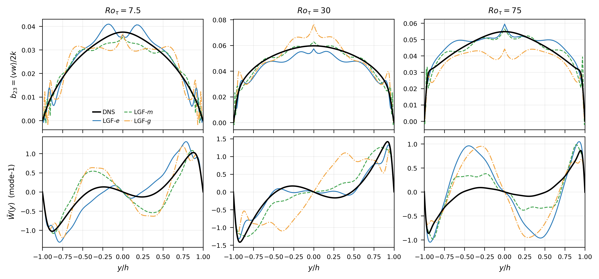
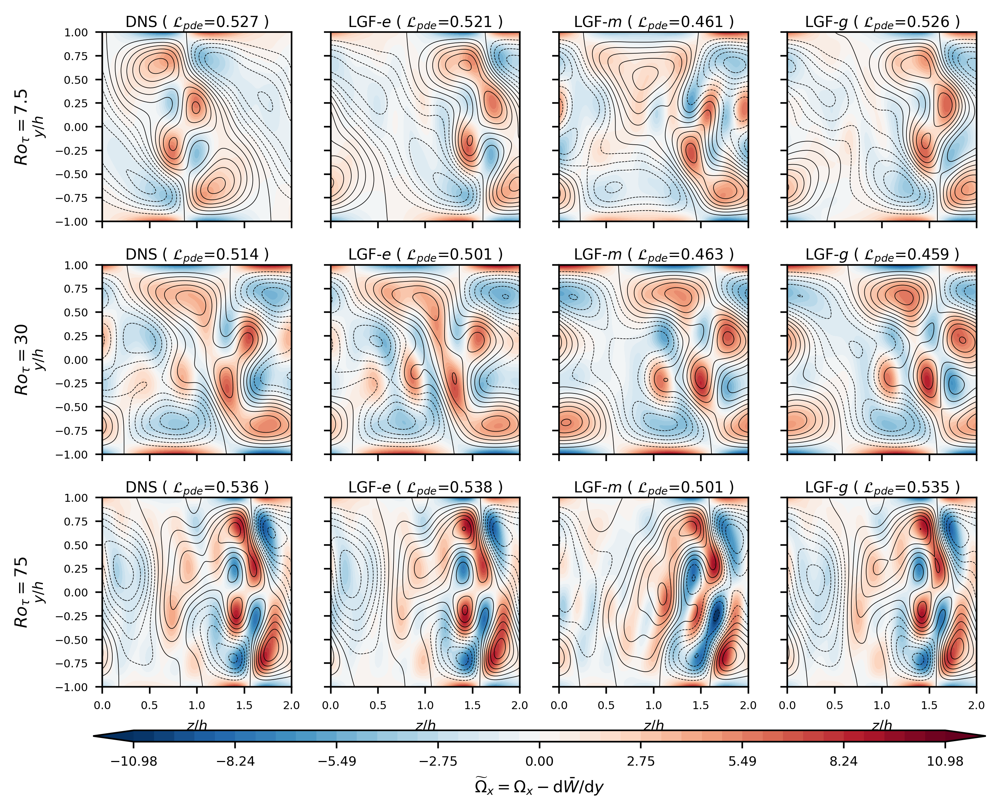
| Roτ | 剖面最差误差 | 对应振幅误差 | 解读 |
|---|---|---|---|
| 75 | 0.63（e 冠军） | 2.2% | 振幅误差对剖面误差非单调：闭合最差的 g 冠军在 Ro=75 反而振幅最准（1.7%） |
| 30 | 0.094 | 2.2% | |
| 75 | 0.60（g 冠军） | 1.7% |
涡胞场由 mode-2 方程的应力产生项与粘性项支配，平均流平流只是修正项 —— 这解释了为什么 O(1) 的 W̄ 误差只引起 O(10%) 的振幅误差。
"discover–close–simulate" 管线因此实用：紧凑的近似闭合就足以驱动 PINN 得到定量准确的二次流。
特征池×操作臂×预算档的组合由人设计、人调、人评；LLM 每轮的 prompt 与形状提示（如补 log y_w）也靠人把关。
legacy 管线里 LLM 变异通道实测已死亡：M_GUIDE 应用 35 个变异、存活 0 个 —— 无池视图的 LLM 建议在种群竞争中全部出局。
LLM 说"我加了壁面因子所以变好"，但没有任何机制去验证或推翻这句话 —— 直到第三幕的消融实验真的推翻了它。
把 LLM 从"一次性军师"升级为"有状态、有预算、有审计员的自主体" —— Agent = LLM + 记忆 + 工具 + 判据 + 证伪。两个系统同时诞生：LGF-Agent（发现闭合）与 Agent-PINN（发现网络结构）。
| 臂（600s · seed 0） | best_loss | 用时 | 停机 |
|---|---|---|---|
| legacy（原管线） | 0.2997 | 679s | 预算耗尽 |
| agent（无审查） | 0.0995 | 435s | 提前达标 ✓ |
| agent（带审查·修复后） | 0.1076 | 626s | 预算耗尽 |
| agent（带审查·修复前） | 0.6151 | 989s ⚠ | 超支 65% |
逐候选审查 ≈5.9k tok/20–100s：62 候选逐个审 → 单步烧穿整臂（989s 只走了 1 步）。修复 = 按 loss 升序只审前 6、其余 deferred 入池。
P2 实测超调：legacy 23–45% vs agent 0–27% —— 轨迹层步间检查让 agent 更守约。
M_GUIDE 调 7 次、应用 35 变异、存活 0 —— 无池视图的 LLM 建议在种群竞争全灭，legacy 实为"G_INIT + 纯 GP 爬山"。
agent 8 步 propose，每步 prompt 经 Pareto 投影注入当前最优池；78 候选全部入 archive 跨步复用，对比 legacy 逐代独立爬山。
legacy 冠军联合 LM 抛光后崩坏至 2.93（单通道数值过拟合）；agent 冠军结构（壁衰减×旋转饱和+对数比）与通道物理一致，抛光后存活并改善至 0.0726。
| 配置（同协议联合 LM） | 终口径 | 参数 | 来源 |
|---|---|---|---|
| agent 全通道 | 0.0169 | 39 | 4×自动发现 · $0.07 |
| 人工 SOTA（e_lgf_mg_big） | 0.0576 | 55 | 人工大形状轮多轮调参 |
| 源（开源仓库/论文） | 借来的核心 |
|---|---|
| SRHarness（清华） | 持久状态 + 预算账本：state.db / budgets 原子扣减 / train.lock |
| Tacke 2026 two-agents | Creator / Inspector 角色分离 —— LLM 只提议、数值裁决 |
| LLM4eD（Du 2024, PoF） | 自改进/进化交替的 LLM 方程发现范式 |
5 篇文档 → 328 chunks，bge-small-zh-v1.5 嵌入 + RRF 融合检索；加 bge-reranker-base 重排后检索质量大幅提升（右图）—— Creator 提议前先"查文献"，literature_seed 策略即基于此。
| 结构 | N 参数 | 3 种子 L_pde | mean ± sd |
|---|---|---|---|
| E2 r1_3（残差·分组） | 6712 | 0.100/0.136/0.104 | 0.114±0.020 |
| E2 r1_1（搜索种子†） | 3852 | 0.193/0.187/0.170 | 0.183±0.012 |
| legacy w48 基线 | 5388 | 0.514 | 0.514 |
显式指定双亲（6712 残差结构 × 6252 lag-壁面结构）→ 5 提案、3 过门（重复哈希正确拒绝 2）、最优子代 0.144 @ 7404 参数 —— 低于双亲身价，上 rank-1 前沿。sin 激活子代退化 0.240，与早期失败提案一致。
对同 Ro legacy 基线相对改善；4/4 全部通过 12 条约束。比较对发现结构保守（参数还少 28.5%），只主张同 Ro 相对改善。
搜索种子单点带 winner's-curse 偏差，故 3 种子复测：两结构区间不重叠、序稳定，但仍如实标注为搜索种子。
Creator 把 0.100 的进步归功于自己加入的 lag 壁面接近因子 —— 语义上讲得通，叙事上很漂亮。
固定 N=3852 的 2×2 网格：残差主效应 −0.154，壁面因子仅 −0.026，交互 +0.081（互为替代）。真功臣是残差连接，壁面因子在有残差时甚至是负作用。
LLM 的自我解释 ≠ 因果证据 —— 它是假设，必须消融。这正是 Agent 系统里"裁决权交给数值"的深层理由。
| 维度 | 原始 PINN（基线） | Agent-PINN（搜索决定） | 状态 |
|---|---|---|---|
| 网格 / 数据 | 101×48 · DNS 同源 | 完全相同 | ❄ 冻结 |
| 损失函数 | Lpde 尺度不变 + Le RMS 能量 | 完全相同 | ❄ 冻结 |
| 谱 ansatz | (1−y²)²Σ[a_k sin+b_k cos]kz*，硬约束恒满足 | 完全相同 | ❄ 冻结 |
| 训练协议 | Adam 1200 + L-BFGS 80 · 同预算 | 完全相同 | ❄ 冻结 |
| 激活函数 | tanh（人工选定） | 搜索胜出 tanh；sin 子代退化 0.240 | ⚙ 搜索 |
| 宽度 / 参数 | w=48 · 5388 参 · Lpde 0.514 | 6712 参 → 0.114（3 种子） 3180 参（−41%）→ 0.295 | ⚙ 搜索 |
| 通道分组 | 单一 MLP 全耦合 | tied-grouped [[2,3,4,6],[1,5]] | ⚙ 搜索 |
| 残差连接 | 无 | 有 —— 最大赢家 | ⚙ 搜索 |
同预算下 Lpde 0.514 → 0.100（−73.9%）；跨 Ro 转移免费 +48~66%。vw4 全链路 NMSE 4–7× 优势 = 闭合公式（LGF-Agent）+ 结构（本页）两层独立叠加。
示意网格（论文 Fig.3 原图见下一页）· 绿格 = skip 起效
⚠ 反直觉事实：LLM 把功劳归给"壁面邻近因子"，消融证明真正起作用的是残差连接。
LLM 自我解释 ≠ 因果证据 —— 裁决权交给数值。
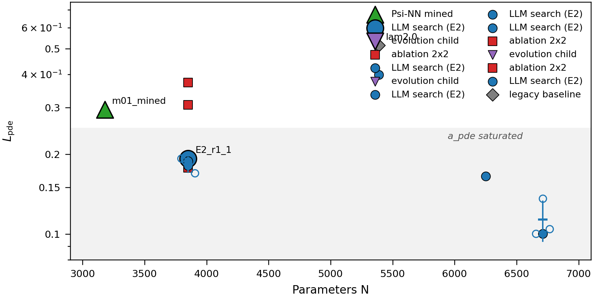
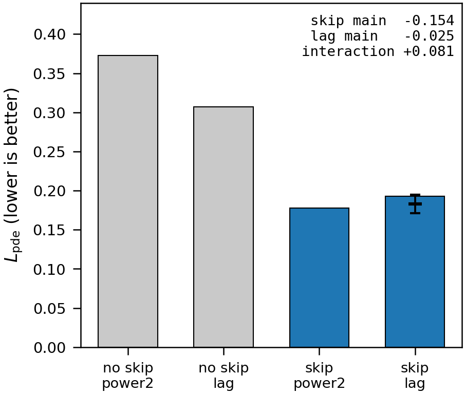
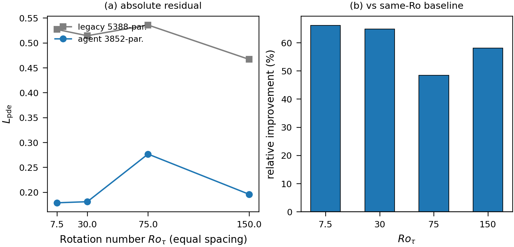
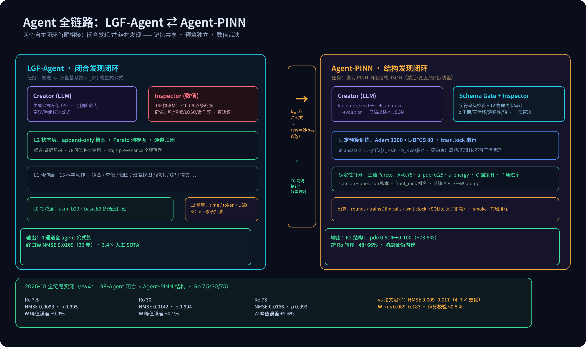
| Roτ | b₂₃ NMSE | ρ | ⟨vw⟩ 相对误差 | W̄ 相对误差 | W̄ 峰值误差 | 积分校验 | 论文冠军对照 |
|---|---|---|---|---|---|---|---|
| 7.5 | 0.0093 | 0.995 | 4.4% | 8.9% | −9.0% | 0.21% | 0.058（e 冠军） |
| 30 | 0.0142 | 0.994 | 4.2% | 12.2% | +4.1% | 0.30% | 0.066（e 冠军） |
| 75 | 0.0166 | 0.992 | 4.0% | 18.3% | +2.6% | 0.42% | 0.124（g 冠军） |
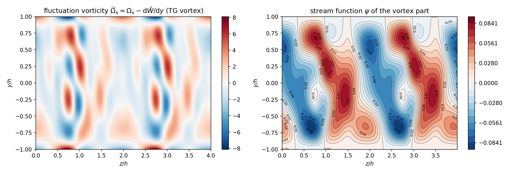
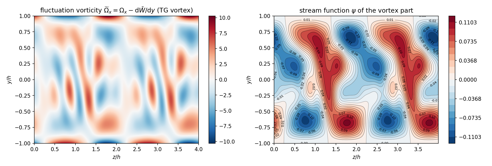
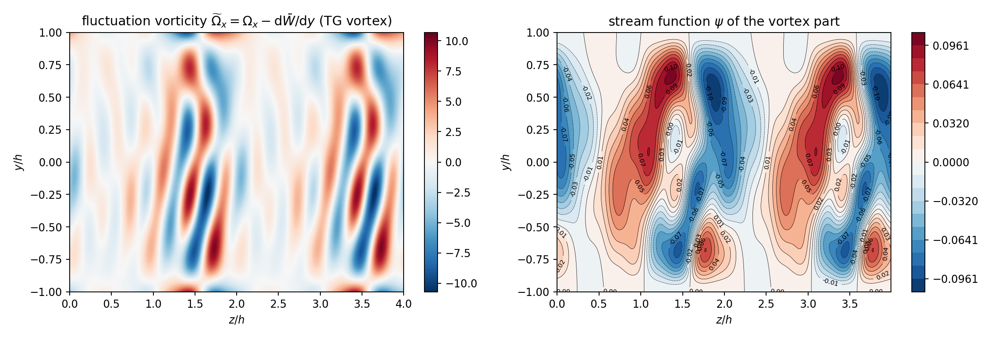
append-only 档案 + Pareto 池视图 = 所有历史候选跨步复用。legacy 每代独立爬山，agent 则像实验科学家：每个新假设都站在全部已知证据上（机制二实测：78 候选全复用）。
LLM 只负责生成（结构 JSON / 公式骨架），裁决权在数值探针与 Inspector（一票否决）。物理断言无探针即降级 unverified —— 杜绝"幻觉公式"混入前沿。
时间/token/USD 三元上限 + SQLite 原子扣减，让"搜索深度"成为可审计的受控变量，对照实验才公平（同 600s 三臂）；成本实测 $0.02–0.03/臂 → 时间是唯一稀缺资源。
每个"为什么好"的叙事都要过消融/多种子/外推三关：2×2 消融推翻 LLM 归因、3 种子破除赢家诅咒、跨 Ro 转移验证泛化 —— 可信度来自证伪管线，不来自 LLM 的口才。
Agent 的价值不是 LLM 更聪明，而是围绕 LLM 建立的"可审计搜索 + 证伪管线" —— 把湍流建模从手工艺变成受控实验科学。
| 项目 | 成本 | 耗时 | 产出 |
|---|---|---|---|
| LGF-Agent 单臂 | $0.02–0.03 | 600 s | a2 冠军公式 |
| 全 4 通道 SR 化 | $0.07 | 2400 s | 0.0169（3.4× SOTA） |
| P1+P2+全通道全部实验 | $0.6 | — | 完整可复现证据链 |
| Agent-PINN E2 轮 | — | 42.6 min | L_pde −73.9% |
| 人工大形状轮（历史） | 无记录 | 多轮人工 | 0.0576 |
glm-5.3：¥2/M 入 + ¥8/M 出；单步 propose ≈2k tok / 8–35s；Inspector.review 1.9–5.9k tok / 20–102s（reasoning 是时间大头）。
全部实验花费仅占默认 $5 预算上限的 0.6%。Agent 化之后，"调参人力"被时间预算显式替代 —— 原来最贵的是隐性的专家时间，现在被记账、被调度、被审计。
正因为钱不稀缺、时间稀缺，P1/P2 全部以墙钟时间为预算卡尺（600s/臂），token 只是防失控的第二道闸。
P2 三种子配对全胜但符号检验 p = 0.125；区间有重叠（legacy min 0.1297 < agent max 0.1693），单次跑批仍可能 legacy 反超 —— 方向稳定，强度待更多种子。
0.0169 为 in-sample；B0 48 参联合解的留一外推已证不可行。39 参结构的泛化是下一个判决点（LOSO 外推检验）。
预算在步间检查，一次 propose 实测可耗 244s —— 修复后仍有 4–13% 超调，两引擎皆有此现象。
600s 档审查开销挤占搜索步数，未转化为 loss 优势；其价值在 provenance 质量与 min_fix，收益判定留给更大预算或更廉价审查策略。
LOSO 外推判决 · propose 耗时剖析与 k/步配比 · Inspector 换底座消融 · Ro150 超出 ASM 适用域的诚实边界
LLM 物理先验 = 隐式正则化：同复杂度下 PySR 退化、LGF 稳定；同预算下 Agent 再 3× 于 legacy。语义记忆换搜索效率。
discover–close–simulate 端到端：O(1) 剖面误差只传成 O(10%) 振幅误差；应力产生+粘性主导 —— 近似闭合即可实用。
Agent 的胜因不是 LLM 更聪明，而是"提议/裁决权力分离 + 状态档案 + 预算硬约束"的组织方式 —— LLM 从"权威"降级为"假设生成器"。
LLM 自我解释 ≠ 证据：2×2 消融推翻壁面因子归因，残差连接才是主效应（−0.154 vs −0.026）。每个叙事都要过消融/多种子/外推三关。
| 系统 | 指标 | 数值 | 对照 |
|---|---|---|---|
| LGF（JHD） | 终口径 NMSE | 0.058 / 0.072 / 0.124 | PySR 0.128–1.17 |
| PINN 振幅误差 | 1.7–11% | 9 runs @ Ro 7.5/30/75 | |
| LGF-Agent | P1 单通道 | 0.0995 vs 0.2997 | 3.0× · 600s 同预算 |
| 同帧替换 a2 | 0.0726 vs 0.1992 | 2.7× vs 人工冠军 | |
| 全 4 通道 | 0.0169（39 参） | 3.4× vs SOTA 0.0576 | |
| Agent-PINN | E2 两轮 | 0.514→0.100 | −73.9% @ 同预算 |
| mined 蒸馏 | 0.295 · 3180 参 | −41% 参数 | |
| 跨 Ro 转移 | +48~66% | 4/4 过 12 约束 |
① LGF-Agent P1/P2 报告（受控对照与全通道替换）
② JHD 投稿：LGF+PINN 两阶段管线（28-run 战役）
③ Agent-PINN：Creator–Inspector + 消融（LLM-driven neural ansatz discovery）